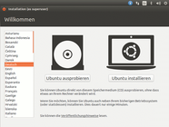
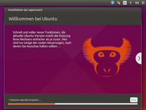
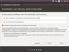

Ubiquity
Ubiquity ist ein in Python geschriebener und seit Ubuntu 6.06 eingesetzter Installationsassistent. Er kann für Debian sowie Ubuntu und dessen Derivate benutzt werden. Das Programm ist auf den Ubuntu Live-CDs zu finden und kann auch mit Live-USB-Sticks eingesetzt werden.
Der Installationsassistent steht unter der freien Lizenz GNU GPL v2 und wird seit der Erstveröffentlichung im Jahr 2006 stetig überarbeitet und erweitert. Ubiquity kann sowohl auf ein Qt- als auch ein GTK-Frontend (GUI) zurückgreifen.
Eigenschaften¶
Eine Ubuntu-Installation kann mit Hilfe von Ubiquity direkt aus dem Live-System (Live-CD oder Live-USB-Stick) heraus erfolgen. Aber auch wenn man kein Live-System zur Installation nutzt, kommt es ins Spiel. Nur bei einer Alternate Installation bleibt Ubiquity außen vor. Es wird zurzeit von Ubuntu und allen Varianten (Kubuntu, Xubuntu, Lubuntu, Mythbuntu usw.).
Des Weiteren ist Ubiquity wie folgt ausgestattet:
Unterstützung von Internationalisierung
Möglichkeit von automatisierten Installationen (siehe Ubiquity Automation)
anpassbar für Derivate (z. B. MythTV)
automatisiertes Erkennen von Software-Abstürzen (Apport)
grafische Auswahl und Anzeige der Zeitzonen
Möglichkeit des Imports folgender Daten aus vorhandenen Windows-, Linux- oder Mac OS X-Installationen (siehe Migrationsassistent):
Anwender-Accounts
Email-Konten
Instant Messenger-Accounts
Lesezeichen
Bilder, Wallpaper, Dokumente, Musik, Fotos, Ordner
Hinweis:
Der Migrationsassistent ist nicht mehr Teil von Ubiquity, da den Entwicklern die Fehleranfälligkeit zu hoch war. Man kann den Assistenten jedoch in jedem Falle über die Paketquellen installieren. Der Paketname lautet: migration-assistant.
Ablauf¶
|  |  |
| Willkommen | Willkommen bei Ubuntu |
Aktuelle Versionen starten mit der Überprüfung der Voraussetzungen (genügend freier Speicherplatz, Stromversorgung angeschlossen, mit dem Internet verbunden). Sind diese erfüllt, erfolgt zunächst die Sprachauswahl und anschließend wird Partman gestartet, das Programm zur Partitionierung des Datenträgers.
Das Partitionswerkzeug wird ab Ubuntu 10.10 bereits am Anfang des Installationsprozesses eingesetzt, um die Installationszeit weiter zu reduzieren. Während die Festplatte partitioniert und Ubuntu installiert wird, gibt der Benutzer weitere Daten ein, so dass die sonst „nutzlose“ Zeit sinnvoll genutzt werden kann.
Nachfolgend erscheint die Städteauswahl (zur Zeitzonenbestimmung). Mit bestehender Internetverbindung kann der Anwender den Ortsnamen eingeben, der bei der Onlinedatenbank Geonames.org abgefragt wird, um die entsprechenden regionalen Einstellungen automatisch zu übernehmen.
Anschließend erfolgt die Tastaturauswahl, um abschließend die persönlichen Daten nebst Passwort einzugeben. Seit Ubuntu 11.10 ist es mit einer Webcam möglich, ein Foto des Benutzers zu machen, welches dann im Displaymanager zum Anmeldung genutzt werden kann.
Sind alle Eingaben getätigt, startet für den Rest der Installation eine Diashow mit Werbung, die einige Eigenschaften Ubuntus zeigt (zur Ansicht dieser siehe Links).
Alternativen¶
Alternativen respektive ähnliche Programme sind:
Anaconda - der Installationsassistent von Red Hat Enterprise Linux und Fedora
Wubi – der Windows-Ubuntu-Installer
Rechtliches¶
Ubiquity steht unter dem Contributor Agreement  . Dazu auch Project Harmony, eine Initiative von Canonical über „Contributor Agreements“ für Open Source Software.
. Dazu auch Project Harmony, eine Initiative von Canonical über „Contributor Agreements“ für Open Source Software.
Problembehebung¶
|  |
| Installation von Ubuntu wird vorbereitet |
Bei Ubuntu 11.04 setzte Ubiquity unter Ubuntu zwingend eine Internetverbindung (zur Installation der Sprachpakete bzw. Lokalisierung) voraus. Sollte wirklich keine Möglichkeit vorhanden sein, eine Internetverbindung zu nutzen oder soll die Installation bewusst offline erfolgen, kann man versuchen, im BIOS des Rechners die Netzwerkkarte/n vorübergehend zu deaktivieren (oder auszubauen, falls möglich). Dann ist aber die Installation von Sprachpaketen nicht möglich und man erhält ein englisches Ubuntu, das nachträglich "eingedeutscht" werden muss (siehe Spracheinstellungen).
Für die Problematik, dass Notebooks an eine externe Stromversorgung angeschlossen sein müssen (ein voller Akku reicht nicht aus), ist bisher keine Lösung vorhanden.
4 GiB reichen zur Installation nicht aus¶
Aufgrund eines Fehlers (775124) setzte Ubiquity mind. 5.3 GiB (!) freien Speicherplatz voraus, obwohl nur max. 3,5 GiB tatsächlich benötigt werden. Davon waren besonders Netbook-Besitzer betroffen, die nur eine 4 GiB SD-Karte zur Verfügung hatten. Die Lösung ist simpel: man verwendet einen weiteren externen Datenträger wie einen USB-Stick oder eine Festplatte, um dem Installer mehr Speicherplatz vorzugaukeln. Allerdings sollte man dann unbedingt manuell partitionieren ("etwas anderes" wählen), damit das System auf dem richtigen Datenträger landet.
Links¶
Ubiquity
- DokumentationUbiquity - Wikipedia
Colin Watson (Entwickler)
Installationsansichten (siehe
 Installation):
Installation):Code und Bilder der Slideshows – bazaar.launchpad.net
Ansichten von Ubiquity-Slideshows – OMG! Ubuntu!
- Erstellt mit Inyoka
-
 2004 – 2017 ubuntuusers.de • Einige Rechte vorbehalten
2004 – 2017 ubuntuusers.de • Einige Rechte vorbehalten
Lizenz • Kontakt • Datenschutz • Impressum • Serverstatus -
Serverhousing gespendet von